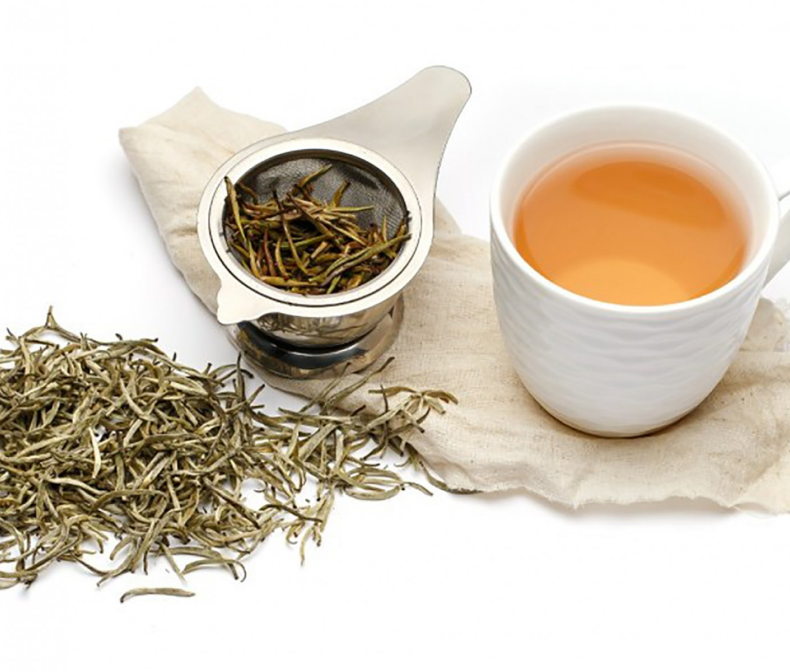

Các loại trà phổ biến hiện nay
Các loại trà phổ biến hiện nay
Chắc hẳn các bạn đã từng nghe qua cái tên hoặc thưởng thức hồng trà hay trà xanh rồi đúng không nào. Hai loại trà trên đều khá phổ biến. Trà xanh thường được đem ra tiếp khách đến chơi, hồng trà thì lại có mặt trong nhiều loại đồ uống mà giới trẻ yêu thích. Vậy các bạn có thắc mắc rằng ngoài trà xanh hay hồng trà thì còn có những loại trà nào khác và giữa chúng khác nhau như thế nào. Hãy cùng chúng mình tìm hiểu trong bài viết này nhé!

Mục lục
1. Bạch trà (trà trắng)
Bạch trà (hay Trà trắng) được biết đến là loại trà có nguồn gốc từ lá và chồi cây Camellia Sinensis, thế nên thường có màu trắng hoặc màu vàng nhạt
Ảnh 1:
Bạch trà
Bạch trà có vị thanh, hương thơm nhẹ, lúc đầu chát nhẹ nhưng có hậu ngọt.
Bạch trà là loại trà không trải qua công đoạn lên men mà được làm héo bằng phương pháp sấy chậm và quạt khô, hạn chế giập nát và bay mất phần lông tơ mỏng trên mặt búp trà.
Để phân loại bạch trà, người ta hoàn toàn dựa vào chất lượng thu hoạch của búp trà. Từ đó, phân ra chất lượng trà cao thấp theo hương vị trà thu được. Dưới đây là 4 loại bạch trà cơ bản nhất hiện nay:
Bạch Hào Ngân Châm: Đây là loại bạch trà thượng hạng nhất, được hái từ 1 búp chồi non nhất trên mỗi cây chè. Lá trà khô nhỏ và dài như cây đinh bạc nên được gọi là Ngân Châm. Từ Bạch Hào ý chỉ bên ngoài được bao phủ bởi một lớp lông dày màu trắng.
Bạch trà Mẫu Đơn: Loại trà này sẽ bao gồm phần chồi và 1,2 lá non kế tiếp xung quanh. Trà Mẫu Đơn có màu sắc đậm và vị mạnh hơn trà Ngân Châm. Khi thưởng thức, hương vị trà đọng lại gần giống như hương của hoa mẫu đơn.
Bạch trà Thọ Mi: Loại trà này sẽ bao gồm phần búp, cọng và lá non. Bạch trà Thọ Mi được thu hoạch từ những phần còn sót lại của 2 loại trà trên.
Bạch trà Cống Mi: Bao gồm là cọng và lá trà, phần búp còn lại rất ít. Trà Cống Mi chủ yếu là lá trà nên hương vị đậm nhất trong các loại bạch trà.
Khác với lục trà, Bạch trà chỉ được trồng với một lượng khá ít, ở Việt Nam thường được làm từ lá của giống Đại Diệp Chủng (Assamica) và trà Shan Tuyết (Shan). Cả 2 giống đều có thân cao, lá trà to và sống lâu năm nên thường hay được gọi chung là trà cổ thụ. Sau khi được hái, lá chè và chồi được sấy trong 72 giờ đồng hồ. Khi được sấy héo hoàn toàn, chúng được để khô tự nhiên để ngăn tình trạng oxy hóa. Điều này giúp chúng giữ nguyên những chất dinh dưỡng và màu tự nhiên. Sau khi chế biến lá trà khô thẳng có màu trắng bạc
2. Lục trà (trà xanh)
Lục trà có tên tiếng Anh là Green Tea. Tại Việt Nam, lục trà còn được gọi là trà xanh hay chè xanh. Cái tên trà xanh được nhiều người biết đến nhất gắn liền với thương hiệu Trà Xanh Thái Nguyên trứ danh từ bao đời nay.
Ảnh 2:
Lục trà
Khác với trà đen được oxi hóa 100%, lục trà chưa trải quá trình oxi hóa hoặc được oxi hóa rất ít (từ 0 – 8%). Do đó, nước trà pha ra có màu xanh, mang hương thơm của lúa non (đối với trà hấp) hoặc mang hương cốm non, hương gạo rang (đối với trà xào).
Trà xanh có nhiều loại, mà khác biệt đáng kể do sự đa dạng của cây trà được sử dụng, điều kiện trông trọt, phương pháp canh tác, quá trình trồng trọt và thời gian thu hái. Uống trà xanh được xem là có lợi cho sức khỏe.
Trà sau khi hái sẽ được làm héo nhanh. Tiếp theo là mang đi xao trên chảo lửa hoặc hấp, mục đích làm lá trà bị nóng để ngăn quá trình oxy hóa xảy ra mà vẫn giữ được hương vị đặc trưng cũng như màu sắc của trà. Sau đó, trà sẽ được mang đi vò để chất trà tiết ra, sấy khô.
3. Olong trà
Trà Ô Long là một trà truyền thống Trung Quốc, sản xuất thông qua một quá trình độc đáo như phơi lá chè cho héo dưới ánh mặt trời và quá trình oxy hóa mạnh mẽ trước khi sấy. Cái tên Ô Long (Rồng Đen) được đặt dựa trên hình dáng của trà sau khi chế biến. Mức độ lên men có thể nằm trong khoảng từ 8% đến 85%, tùy thuộc vào sự đa dạng và phong cách sản xuất.
Ảnh 4:
Olong trà
Đặc điểm để nhận biết trà oolong rất dễ: hình dạng của những cánh trà đã được sấy vo tròn thành từng viên màu xanh đen, khi pha nước có màu xanh vàng óng, dịu nhẹ và mang lại nhiều lợi ích sức khỏe cho người thưởng trà.
Trà Ô Long được xử lý nhiều cách khác nhau, nhưng nhìn chung có 2 cách phổ biến khá khác biệt:
Một là lá trà được cuộn lại thành lá dài nhọn theo kiểu truyền thông.
Hai là lá trà được cuộn lại thành hình hạt tròn đều theo phong cách trà Đài Loan.
4. Hồng trà (trà đen)
Hồng trà hay còn được gọi trà đen, tiếng Anh là “black tea”. Hồng trà được lên men toàn phần, oxy hóa 100% từ lá trà xanh và chuyển hóa thành màu đen, cam hoặc đỏ, cho nên được gọi là trà đen/hồng trà
Hồng trà là cách gọi của Trung Quốc, xuất phát từ màu hồng ngọc hoặc nâu đỏ của nước trà sau khi hãm. Tên gọi trà đen xuất phát từ phương Tây dựa vào màu sắc của lá trà sau khi sấy khô. Hương vị của hồng trà có vị thơm nhẹ, ít chát,
Ảnh 4:
Hồng trà
Cùng với trà ô long và trà xanh, hồng trà cũng là 1 trong 3 loại trà được ưa chuộng nhất thế giới, phù hợp cho rất nhiều các đối tượng thực khách từ người lớn tuổi - trung niên.
Quá trình lên men toàn phần, oxy hóa 100% búp trà non diễn ra gồm các khâu từ hái trà - làm héo - vò trà - lên men - hong khô - hong khô lại - đóng gói, lưu trữ và bảo quản.
5. Hắc trà
Đây là loại trà đồng thời bị oxi hóa nội sinh cao độ và lên men ngoại sinh trong thời gian rất dài, nổi tiếng nhất với trà Phổ Nhĩ (Pu’erh). Hắc trà ban đầu chỉ có Phổ Nhĩ, tên trà lấy từ tên vùng thị trấn Phổ Nhĩ, nơi làm ra loại trà đó mấy trăm năm nay, thuộc tỉnh Vân Nam, Trung Quốc.
Ảnh 4:
Hắc trà
Năm 1973, xưởng trà Menghai và Kunming (Côn Minh) phát minh ra phương pháp ủ đống lên men nhằm thúc đẩy quá trình lão hóa trà nguyên liệu (thay vì hàng chục năm tới vài chục năm như cách truyền thống, các xưởng chỉ cần vài tháng). Để tránh tên gọi mang tới nhầm lẫn, từ năm 2008, Trung Quốc có qui định, chỉ có hắc trà sản xuất ở Vân Nam mới được gọi là Phổ Nhĩ (nhằm bảo hộ nhãn hiệu và xuất xứ). Các vùng khác làm thì gọi chung là hắc trà (hay trà lên men).
Bắt đầu bằng việc cố định lá chè nguyên liệu, sau đó đem vò và làm khô. Đến đây, nếu đóng bánh và đem cất trữ thì ta được Phổ Nhĩ sống theo truyền thống. Thường sau khoảng 8 năm lão hóa là bắt đầu dùng tốt. Phổ Nhĩ có thể cất giữ dùng dần trong vài chục năm hoặc lâu hơn.Hắc trà đặc trưng bởi hương cỏ, cây gỗ, thảo mộc và mùi đất mạnh mẽ, đạt được vị êm dịu, đắng nhẹ như thuốc cổ truyền, vị ngọt độc đáo, màu nước nâu đen cánh gián.
Kết thúc
Vậy là chúng ta đã điểm mặt gọi tên những loại trà phổ biến nhất. Ngày nay trà được biến tấu khá nhiều để phù hợp với thị hiếu và khẩu vị của người uống. Hy vọng qua bài viết này, các bạn có thể biết thêm đôi chút về các loại trà cũng như bổ sung thêm vào menu đồ uống của bản thân một loại trà nào đó. Nếu bạn muốn đọc thêm những thông tin bổ ích về trà nói chung và trà Tân Cương nói riêng và trà nói chung, đừng quên đăng ký nhận bài viết về e-mail của bạn dưới đây nhé!
Đọc thêm
Thông tin liên lạc
Km10, Nguyễn Trãi, Tân Cương, Thái Nguyên
0123 456 789
Sacluctancuong@gmail.com